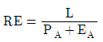
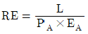
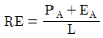
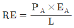
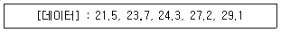

제강기능장 (2005-07-17 기출문제)
1과목: 임의 구분
1. 탈황을 촉진하는 방법으로 틀린 것은?
- 고염기도의 강재를 형성한다.
- 강재의 유동성을 높여서 탈황속도를 촉진하기 위하여 형석을 감소시킨다.
- 석회의 재화를 촉진하기 위하여 soft blow하여 (T Fe)를 증가시킨다.
- 황흡수능력을 높이기 위하여 강재량을 증가한다.
(정답률: 65%)

2. 자경강(self-hardening steel)은?
- 고 탄소강
- 고 텅스텐강
- 고 몰리브덴강
- 고 크롬강
(정답률: 66%)
3. 연속주조 속도를 증가시키기 위한 방법으로 틀린 것은?
- Roll Pitch 의 확대
- Spray 냉각 강화
- 다점교정
- 압축주조
(정답률: 66%)
4. 유압장치의 단점으로 작동유의 온도에 따라서 기계속도가 변화하는 것을 들 수 있다. 일반적으로 기름의 온도가 상승하면 점도는 (①), 온도가 내려가면 점도는 (②). ( )의 내용으로 옳은 것은?
- ① 일정하고, ② 높아진다
- ① 낮아지고, ② 높아진다
- ① 높아지고, ② 낮아진다
- ① 높아지고, ② 변화없다
(정답률: 77%)
5. 진공탈가스법중 순환탈가스법(RH법)은 용강이 진공조내에서 상승관을 따라 상승하고 하강관을 따라 하강함으로서 용강내의 가스를 제거한다. 용강이 상승관을 따라 상승하게 하는 원동력은?
- 모타를 이용한다.
- 열을 가한다.
- 전자력을 사용한다.
- 상승관에 가스를 취입 비중을 적게한다.
(정답률: 73%)
6. 슬래그의 역활로 틀린 것은?
- 가스 흡수방지
- 정련작용을 한다.
- 열의 방출작용을 한다.
- 용강의 산화방지
(정답률: 71%)
7. 강재(鋼滓)의 주성분과 기능에 관한 설명 중 틀린 것은?
- 염기성 제강 강재는 FeO-MnO-(MgO)-SiO2가 산성 제강 강재는 FeO-CaO-(MgO)-SiO2가 주성분이다.
- 강재는 P,S 등 유해불순물을 제거하고 유용원소의 손실을 적게하는 역할을 한다.
- 강재는 산소를 운반하는 매개자로서의 역할을 한다.
- 강재는 노내분위기로부터 용강을 격리하여 H2, N2등 gas의 흡수를 방지한다.
(정답률: 73%)
8. LD 전로 취련중기에 망간 융기(복망간)현상이 일어나는 이유는?
- (MnO)가 Si에 의하여 환원되어 강욕중[Mn]이 증가하기 때문이다.
- (MnO)가 P에 의하여 환원되어 강욕중[Mn]이 증가하기 때문이다.
- (MnO)가 C에 의하여 환원되어 강욕중[Mn]이 증가하기 때문이다.
- (MnO)가 Al에 의하여 환원되어 강욕중[Mn]이 증가하기 때문이다.
(정답률: 69%)
9. 연속주조에서 2차 냉각수의 목적으로 틀린 것은?
- 윤활역할
- 응고촉진
- 벌징(Bulging) 방지
- 기계냉각
(정답률: 62%)
10. 컴퓨터에서 통신속도의 단위는?
- DIP
- DPI
- BPS
- BPI
(정답률: 78%)
11. 순금속의 응고과정 순서로 맞는 것은?
- 결정핵 발생 - 결정경계 형성 - 결정핵 성장
- 결정핵 발생 - 결정핵 성장 - 결정경계 형성
- 수상정 발생 - 결정의 성장 - 결정경계 형성
- 결정경계 형성 - 결정핵 발생 - 결정핵 성장
(정답률: 78%)
12. LD전로가 대형화 되면서 고로에서 출선된 용선을 제강공정에서 운반하는 용기로 가장 적합한 것은?
- 혼선로 (Mixer)
- OL (Open Ladle)
- 수강레이들 (Teeming Ladle)
- TLC(Torpedo Ladle Car)
(정답률: 75%)
13. 다음에서 레이들 정련법의 목적이 아닌 것은?
- 품질 향상
- 생산성 향상
- 설비비 절감
- 원가 절감
(정답률: 72%)
14. 슬라이딩 노즐(sliding nozzle)의 장점으로 틀린 것은?
- 주입사고가 적다.
- 주입속도의 조절이 쉽다.
- 원격조작을 하므로 인건비가 절약된다.
- 주입량에 따라 노즐재료가 다르다.
(정답률: 75%)
15. 다음 노외탈황법중 기계적 교반법에 해당되지 않는 것은?
- Demag-Ostberg 법
- Siphon ladle 법
- Rheinstabl 법
- Kanbare Reacter 법
(정답률: 64%)
16. 용강에 Cu, Ni, Mo와 같은 합금원소를 첨가하기 위해서는 산소전로 취련의 어느 시기에 이들의 합금철을 첨가하는 것이 좋은가?
- 산소 취련 전에 첨가한다.
- 취련이 끝난 후 전로내에 첨가한다.
- 수강전의 레이들에 미리 첨가하여 놓는다.
- 출강 중 레이들에 첨가한다.
(정답률: 75%)
17. Mo계 고속도강이 W계 고속도강보다 우수한 점으로 틀린 것은?
- 비중이 적고 염가이다.
- 인성이 높다.
- 소입온도가 낮다.
- 열전율이 낮다.
(정답률: 61%)
18. 열기전력을 이용하여 온도를 측정하는 온도계는?
- 바이메탈 온도계
- 열전대
- 저항온도계
- 방사고온계
(정답률: 79%)
19. 전기사고가 발생하였다. 가장 먼저 해야 할 조치 사항은?
- 병원으로 운반한다.
- 응급치료를 한다.
- 물을 붓는다.
- 전원을 차단한다.
(정답률: 78%)
20. 용강의 탈산을 목적으로 용강속에 Al탄을 발사하는 Al탄 발사법(ABS법)에서 Al탄의 지름이 커지면 Al탄의 돌입과 부상에 요하는 시간은 어떻게 달라지는가?
- 돌입과 부상시간은 같이 짧아진다.
- 돌입시간은 짧아지고 부상시간은 길어진다.
- 돌입시간은 길어지고 부상시간은 짧아진다.
- 돌입시간과 부상시간이 같이 길어진다.
(정답률: 56%)
2과목: 임의 구분
21. 다음 중에서 내화물의 침식지수의 식이 맞는 것은? (단, 아아크전력 = PA, 아아크전압 = EA, 전극과 측벽과의 거리 L, RE = 내화물의 침식지수)




(정답률: 65%)
22. 전기로 제강의 원료 중에서 용강 중의 불순물을 산화제거하고, 용강의 표면을 덮어 노내 가스와의 접촉을 방지할 목적으로 사용되는 것은?
- 고철
- 생석회
- 용선
- 알루미늄
(정답률: 76%)
23. 다음중 경도가 가장 높은 조직은?
- Pearlite
- Sorbite
- Martensite
- Austenite
(정답률: 67%)
24. 안전관리 활동은 안전관리 조건이 충족될 때, 4개의 각 단계에 따라 진행된다. 안전관리의 4-사이클 중에서 실시(do) 다음에 실시해야 할 단계는?
- 검토(check)
- 계획(plan)
- 준비(prepare)
- 설계(design)
(정답률: 77%)
25. C(s) + CO2(g) = 2CO(g)인 Boudouard반응 중 일정온도에서 압력을 증가한 경우 반응의 평형은 어느방향으로 움직이는가?(오류 신고가 접수된 문제입니다. 반드시 정답과 해설을 확인하시기 바랍니다.)
- 오른쪽으로 진행
- 왼쪽으로 진행
- 평형으로 움직이지 않음
- 왼쪽으로 진행하다가 오른쪽으로 진행
(정답률: 39%)
26. 제강로에서 출강된 용강은 레이들 내에서 전처리로서 통상불활성가스 취입에 의한 교반처리나 진공탈가스처리가 행하여 진다. 이때 레이들내 용강온도의 균일화와 적정화, 용강의 청정화 및 성분조정 등의 목적을 위해 상취입 및 저취입으로 실시하는 처리는?
- 포밍(formming)
- 시즈닝(seasoning)
- 버블링(bubbling)
- 인젝틴(injecting)
(정답률: 73%)
27. 전로의 취련작업 중 취련종료시 탄소함량을 0.04%정도로 일정하게 취지하여 생산성을 높게 작업하는 취련방법은?(오류 신고가 접수된 문제입니다. 반드시 정답과 해설을 확인하시기 바랍니다.)
- Double Slag법
- Flat Blowing법
- Catch Carbon법
- SLP(Slag Less Process)법
(정답률: 28%)
28. 다음 중 주형진동과 관련 없는 것은?
- 오실레이션 마크(Oscillation Mark)
- Negative strip time
- 유압 구동
- 벌징(Bulging)
(정답률: 63%)
29. 아아크식 전기로의 환원철 사용의 장점은?
- 다량의 산화칼슘이 필요하다.
- 철분의 회수가 불량하다.
- 맥석분이 많다.
- 제강 시간을 단축 할 수 있다.
(정답률: 65%)
30. 탈인촉진이 아닌 것은?
- 강재중의 (P2O5)가 낮을 것
- 강재의 산화력과 염기도가 높을 것
- 강재의 유동성이 좋을 것
- 강욕의 온도가 높을 것
(정답률: 73%)
31. 철광석을 처리하여 철품위를 높이고 P, S, Cu 등의 유해성분을 제거하는 것은?
- 선광
- 소결법
- 철광석 제조
- 원료의 배합
(정답률: 65%)
32. 복합취련 전로법의 특징으로 틀린 것은?
- 취련시간이 단축되고 용강실수율이 높다.
- 상 하 취련으로 노의 수명이 감소한다.
- 강욕교반이 균일하여 온도, 성분의 미세조정이 가능 하다.
- 극저탄소강과 청정강 생산에 유리하다.
(정답률: 67%)
33. 재해발생경과, 재해원인, 피해상황, 사후처리에 대해서 시행되는 것이나 안전관리란 측면에서 재해발생의 원인을 해명하고 안전을 이룩하기 위한 것으로 가장 필요한 것은?
- 재해계획
- 재해촉구
- 재해조사
- 재해행위
(정답률: 76%)
34. 진공 탈가스의 효과와 관계가 없는 것은?
- 비금속 개재물의 저감(低減)
- 기계적 성질의 향상
- 유해 원소의 증발제거
- 온도 및 성분의 불균일화
(정답률: 51%)
35. 고로에서 출선된 용선을 전로에 장입하기 전에 전로의 부하를 줄여주기 위하여 예비처리하는 기술이 현재 널리 보급되어 산업현장에서 크게 활용되고 있다. 이때 예비처리로 제거하는 원소가 아닌 것은?
- 탈탄소 [C]
- 탈인 [P]
- 탈규소 [Si]
- 탈류황 [S]
(정답률: 69%)
36. 유압제어 밸브중 두개 이상의 분기회로로 작동순서를 회로의 압력 등에 따라 제어하는 밸브는?
- 릴리이프밸브
- 시퀀스밸브
- 감압밸브
- 카운터 밸런스밸브
(정답률: 72%)
37. 빛을 받은 면의 밝기를 무엇이라 하는가?
- 진동
- 채광
- 차음
- 조도
(정답률: 76%)
38. 작업장에서 작업을 진행하는 작업순서로서 바람직하지 않은 것은?
- 요구되는 조건에 충분히 적합하고 또 실행할 수 있는 것이어야 한다.
- 추상적 표현은 금물이며 수치로 표현할 수 있는 것은 수치로 표현하는 것이 좋다.
- 단위 작업을 상세하게 분해하여 방대하게 제시한다.
- 과거의 사고 등 체험에서 발생을 예상할 수 있는 이상(異常)에 관한 조치에 대해서도 제시되어야 한다.
(정답률: 74%)
39. 다음은 Fe-Fe3C의 평형상태도에서 일부 영역을 나타낸 것이다. 자유도가 0이 되지 않는 영역은?
- Acm 선상
- 포정반응선상
- 공석반응선상
- 공정반응선상
(정답률: 61%)
40. 수십개의 자루에 보내 연진을 포집, 자루의 섬유 사이로 통과시켜 청정하는 방식의 집진기는?
- Venturi scrubber
- Bag-filter
- 전기집진기(건식)
- 전기집진기(습식)
(정답률: 79%)
3과목: 임의 구분
41. 전기로를 아아크식과 유도식으로 분류하는 기준은?
- 전기에너지의 밀도
- 전기에너지의 노내유도 방법
- 전압과 로의 용량
- 전기에너지의 발열량
(정답률: 71%)
42. 공구강의 구비조건으로 틀린 것은?
- 상온 및 고온에서 경도가 클 것
- 내마모성이 클 것
- 연신 및 충격성이 우수할 것
- 가공 및 열처리성이 양호할 것
(정답률: 52%)
43. 전로법의 열원은 무엇인가?
- 전기
- LNG
- 용선의 현열
- LPG
(정답률: 74%)
44. 강괴 내부결함인 편석에 대한 설명으로 맞는 것은?
- 강괴 응고시 주로 중앙저부에 발생한다.
- 주입중 CO가스에 의해 용강이 교반될수록 편석은 감소한다.
- 편석도를 증가시키는 원소순은 Mn > C > P > S 순이다.
- 강괴가 커질수록 편석은 심해진다.
(정답률: 61%)
45. 구리에 아연을 첨가함에 따라 다른 어느 것과는 달리 아연과 구리 성질의 평균치 이하로 급격히 떨어지는 성질은?
- 밀도
- 인장강도
- 전기전도도
- 비등점
(정답률: 65%)
46. 실용금속 중에서 가장 가볍고 비강도가 우수하여 항공기, 자동차 부품, 광학기계 등에 이용되는 함금은?
- 알코아
- 라우탈
- 다우메탈
- 두랄루민
(정답률: 64%)
47. 탈산제의 구비조건으로 맞는 것은?
- 가격이 비싸고 대량으로 사용할 것
- 산소와의 친화력이 작을 것
- 용강중에 천천히 용해할 것
- 탈산 생성물의 부상속도가 클 것
(정답률: 71%)
48. 고주파 유도로의 용해 조업설명으로 틀린 것은?
- 고합금 일수록 용해에 유리하다.
- 교반작용은 자연적으로 발생한다.
- 탈탄, 탈인, 탈황이 우수하다.
- 무산화 정련 용해법으로 원료규격이 엄격하다.
(정답률: 63%)
49. 전로용 내화물의 요구 조건으로 틀린 것은?
- 염기성 Slag에 대한 화학적인 내식성
- 용강이나 용제의 교반에 대한 내마모성이 없어야 한다.
- 급격한 온도 변화에 대한 내열 Spalling성
- 장입물의 충격에 대한 내충격성
(정답률: 58%)
50. 조괴작업시 주입속도에 대한 설명 중 틀린 것은?
- 킬드강은 일반적으로 균열에 대하여 민감하므로 천천히 주입해야 한다.
- 림드강은 주입 속도를 약간 빨리하여도 기포가 응력에 대해 완충역할을 하므로 균열이 발생되지 않는다.
- 림드강에서 주입속도를 천천히 하면 강괴표면이 좋아진다.
- 림드강에서 주입속도를 천천히 하면 공기에 의한 산화도가 많아 결함이 생기기 쉽다.
(정답률: 59%)
51. 다음중 직류전기로의 장점으로 틀린 것은?
- 상부전극이 1개로서 소천정과 전극간 공간이 적어 소음 발생이 적다.
- 전력계통 설비가 안정적으로 운영이 가능하다.
- 설비가 단순하다.
- 노내 고철을 균일하게 용해할 수 있다.
(정답률: 60%)
52. 유압유가 구비해야할 조건으로서 틀린 것은?
- 유체 및 증기상태에서 독성이 적을 것
- 비중이 높을 것
- 넓은 온도 변화에 걸쳐 점도변화가 적을 것
- 열, 물, 산화에 대한 안전성이 클것
(정답률: 71%)
53. 최근에 진보된 제강방법 중 연속주조법이 발전된 근본적인 이유와 관련이 가장 적은 것은?
- 경제성의 신뢰도
- 기술의 신뢰도
- 대량 생산과 단위공정수의 증가
- 생산 적용가능 강종의 확대
(정답률: 57%)
54. 제강 슬랙(slag)의 산화력은 어느 농도에 비례 하는가?
- 유리[FeO]
- 유리[SiO2]
- 유리[CaO]
- 유리[MgO]
(정답률: 58%)
55. 다음 중 로트별 검사에 대한 AQL 지표형 샘플링검사 방식은 어느 것인가?
- KS A ISO 2859-0
- KS A ISO 2859-1
- KS A ISO 2859-2
- KS A ISO 2859-3
(정답률: 61%)
56. 다음 데이터로부터 통계량을 계산한 것 중 틀린 것은?

- 중앙값(Me) = 24.3
- 제곱합(S) = 7.59
- 시료분산(s2) = 8.988
- 범위(R) = 7.6
(정답률: 61%)
57. 생산보전(PM:Productive Maintenance)의 내용에 속하지 않는 것은?
- 사후보전
- 안전보전
- 예방보전
- 개량보전
(정답률: 61%)
58. 다음 중 계량치 관리도는 어느 것인가?
- R 관리도
- nP 관리도
- C 관리도
- U 관리도
(정답률: 55%)
59. 다음 중에서 작업자에 대한 심리적 영향을 가장 많이 주는 작업측정의 기법은?
- PTS법
- 워크 샘플링법
- WF법
- 스톱 워치법
(정답률: 63%)
60. 여력을 나타내는 식으로 가장 올바른 것은?
- 여력 = 1일 실동시간 × 1개월 실동시간 × 가동대수
- 여력 = (능력 - 부하) ⒡ 1/100
- 여력 = 능력 - 부하/능력 ⒡ 100
- 여력 = 능력 - 부하/부하 ⒡ 100
(정답률: 65%)